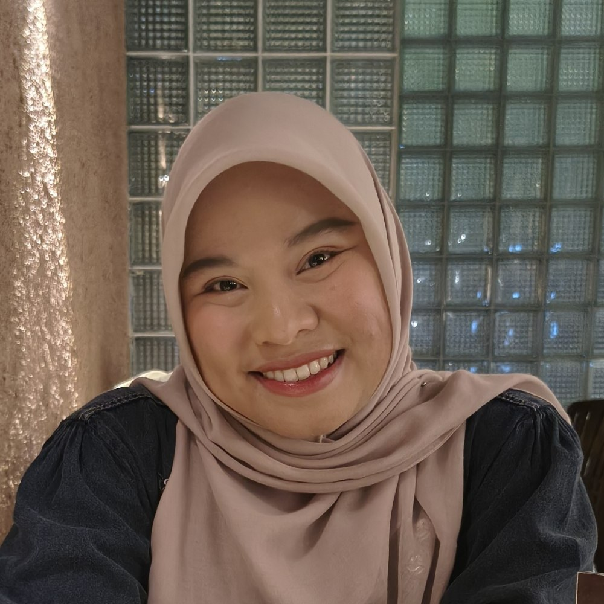

Halo, saya Fani Nurhafizah — lulusan S1 Pendidikan Guru Madrasah Ibtidaiyah (PGMI) UIN Sultan Syarif Kasim Riau yang berdedikasi tinggi di bidang pendidikan anak. Berpengalaman sebagai guru inval, guru praktik lapangan, dan tutor privat SD.

Lulusan S1 Pendidikan Guru Madrasah Ibtidaiyah (PGMI) UIN Sultan Syarif Kasim Riau yang berdedikasi tinggi di bidang pendidikan anak. Memiliki pengalaman aktif dalam organisasi kemahasiswaan, program magang mengajar, serta pengalaman empiris sebagai guru pengganti dan tutor privat SD.
Terbiasa menyusun pendekatan pengajaran SD yang interaktif, komunikatif, dan terstruktur.
UIN Sultan Syarif Kasim Riau, Pekanbaru. Fokus pada pendidikan dasar anak dengan praktik pengalaman lapangan persekolahan di SD Islam Al Azhar 54 Pekanbaru.
Mengajar kelas 4 untuk mata pelajaran IPAS, Matematika, B. Indonesia, dan PPKn. Mengajar kelas 2 untuk Matematika, PPKn, dan IPAS.
Menyusun Rencana Pelaksanaan Pembelajaran (RPP) mata pelajaran SD, praktik mengajar langsung di kelas, membimbing siswa dalam pemahaman materi, pengelolaan kelas, pemeriksaan tugas, dan evaluasi hasil belajar siswa.
Mengajar seluruh mata pelajaran untuk kelas 2 SD, pendampingan belajar intensif bagi siswa kelas dasar, pendampingan penyelesaian tugas sekolah, dan persiapan ujian.
Menguasai seluruh mata pelajaran jenjang SD untuk pengajaran yang utuh dan menyeluruh.
Menyusun Rencana Pelaksanaan Pembelajaran mata pelajaran SD secara terstruktur.
Mengelola kelas, memeriksa tugas, dan mengevaluasi hasil belajar siswa.
Pendekatan pengajaran yang interaktif, komunikatif, dan mudah dipahami anak.
Mampu memahami materi dan referensi pembelajaran berbahasa Inggris.
Tutor privat: pendampingan tugas sekolah dan persiapan ujian secara intensif.
Saya terbuka untuk peluang kerja sebagai guru SD/MI maupun tutor privat. Area mengajar Perawang & sekitarnya, atau online. Jadwal: Senin–Sabtu.